Helvetica
abcdefghijklmnop
ABCDEFGHIJKLMNOP
0123456789
!@#%”&*?[]().
Thin
Brand identity · 2026
A time-inspired identity system balancing exact structure with atmospheric motion.
o'clock is a self-initiated playlist channel that brings music and visual design together to create an immersive experience. Each playlist is built around a distinct theme, pairing carefully curated music with original 3D modeling and art direction.
More than a listening platform, o'clock is designed to shape atmosphere and become part of the listener’s everyday life. Its visual and auditory worlds invite people to slow down, settle into the moment, and lose track of time.
Brand Identity
#efefef CMYK: 0, 0, 0, 0 RGB: 0, 0, 0
#efefef CMYK: 0, 0, 0, 0 RGB: 0, 0, 0
#efefef
CMYK: 0, 0, 0, 0
RGB: 0, 0, 0
abcdefghijklmnop
ABCDEFGHIJKLMNOP
0123456789
!@#%”&*?[]().
abcdefghijklmnop
ABCDEFGHIJKLMNOP
0123456789
!@#%”&*?[]().
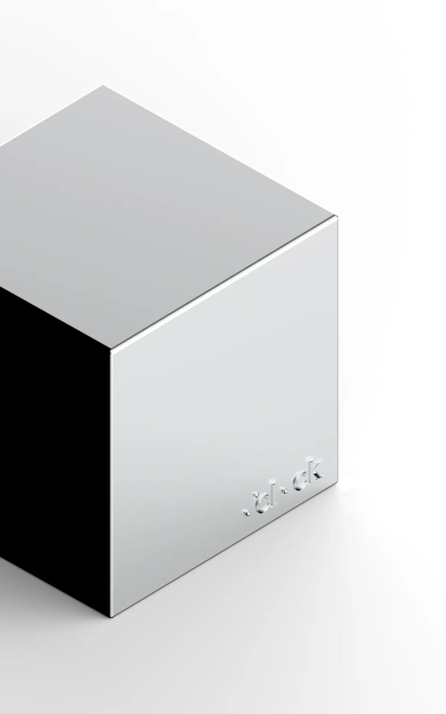
Chrome
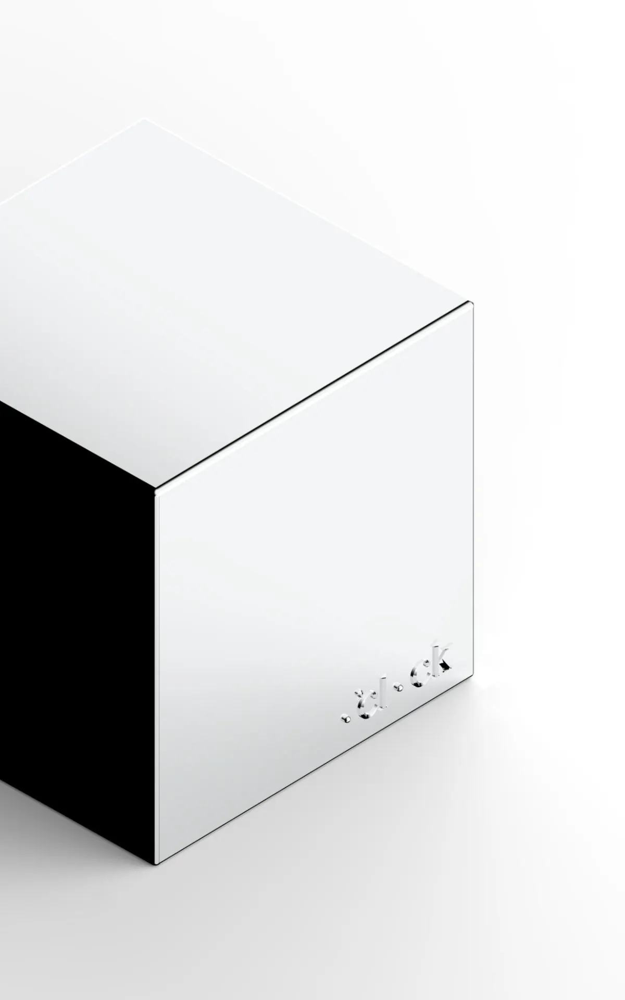
Brushed Chrome
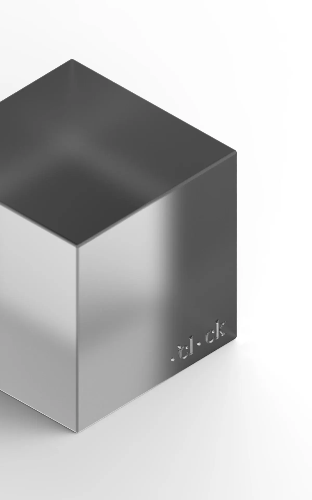
Frost Glass
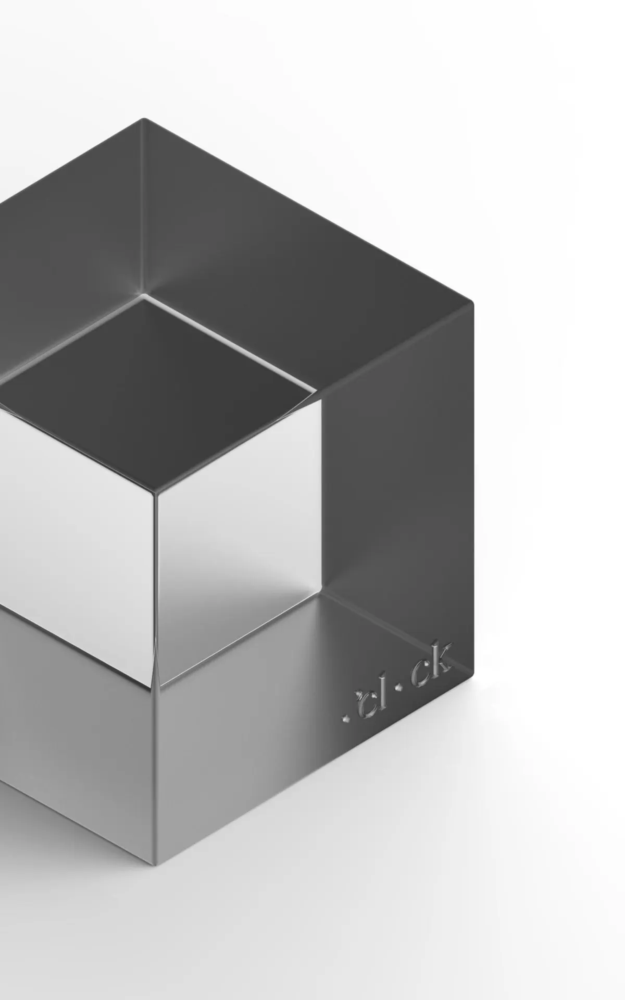
Glass
Logo Animation
Transitions
Object: Marshall Action III
Object: “Abaxial Clock” by Karim Rashid
Object: O’CLOCK Retro Television
Object: AnZa Espresso Machine
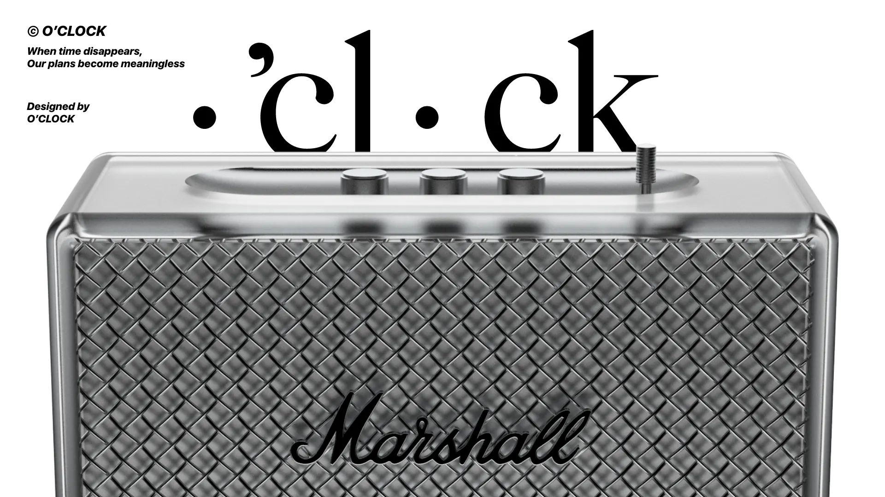
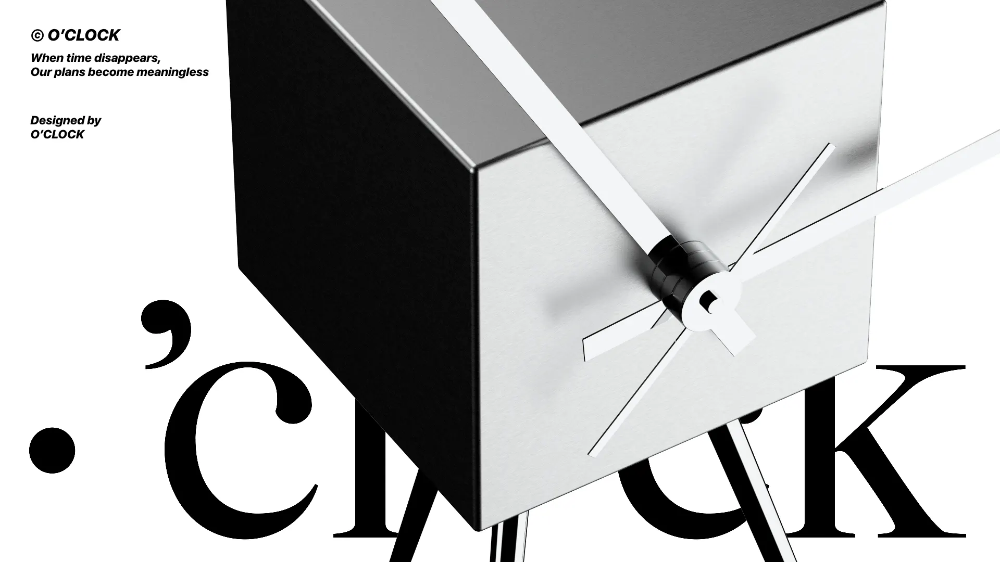
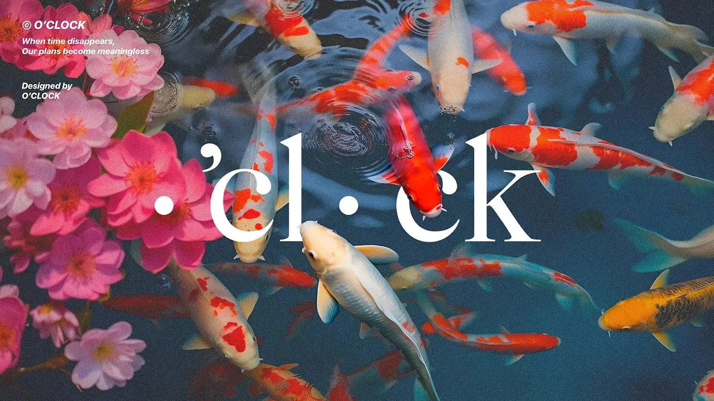
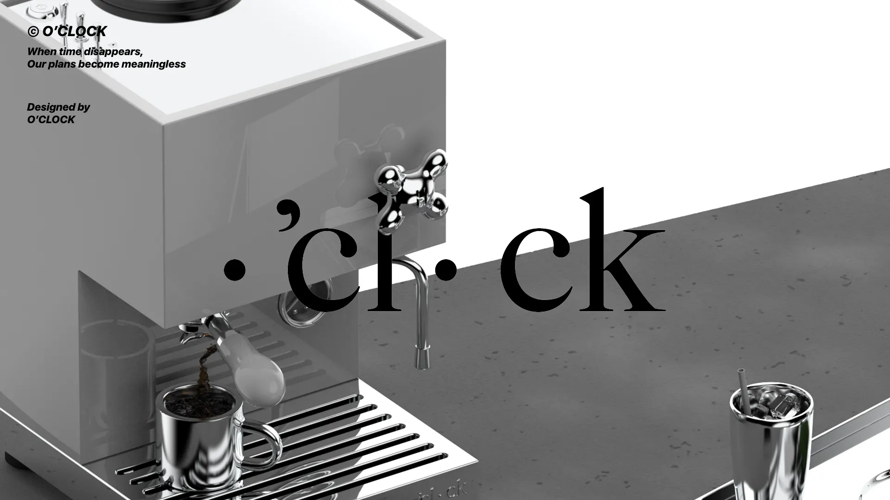
Application Design
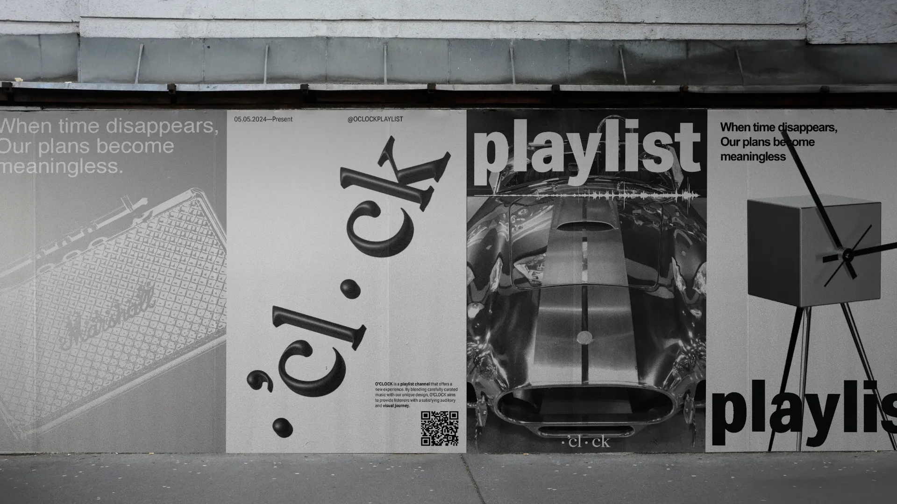
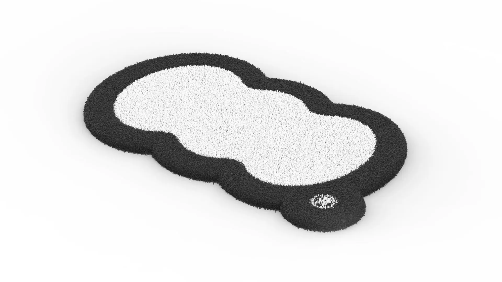
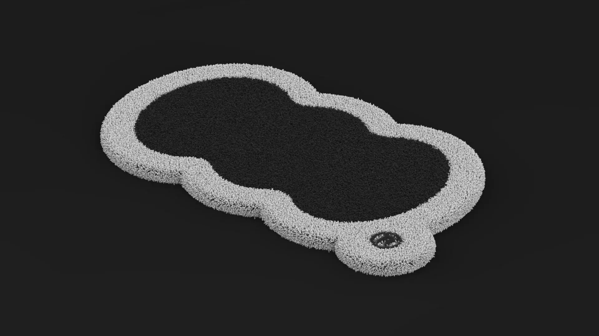
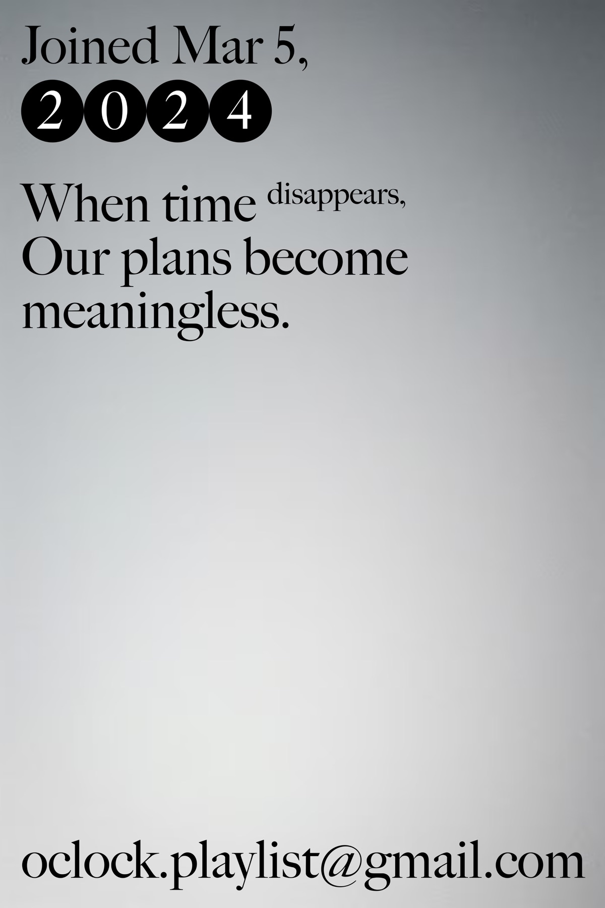
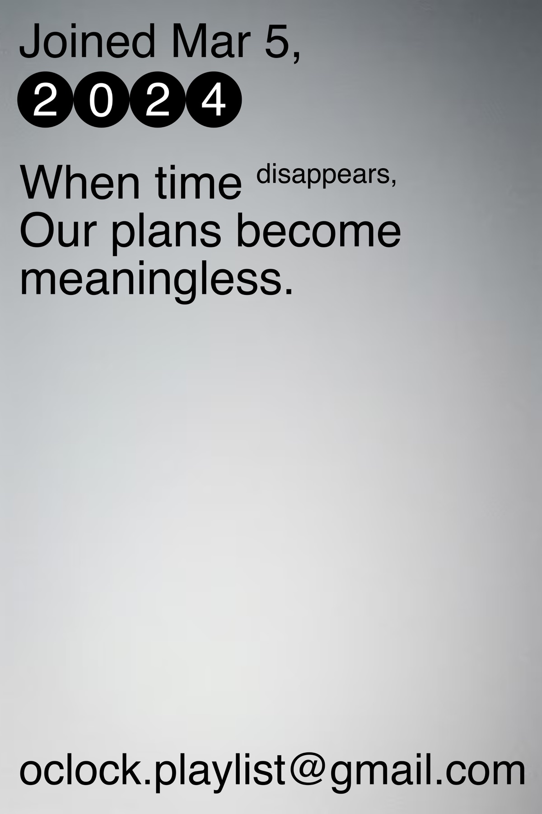
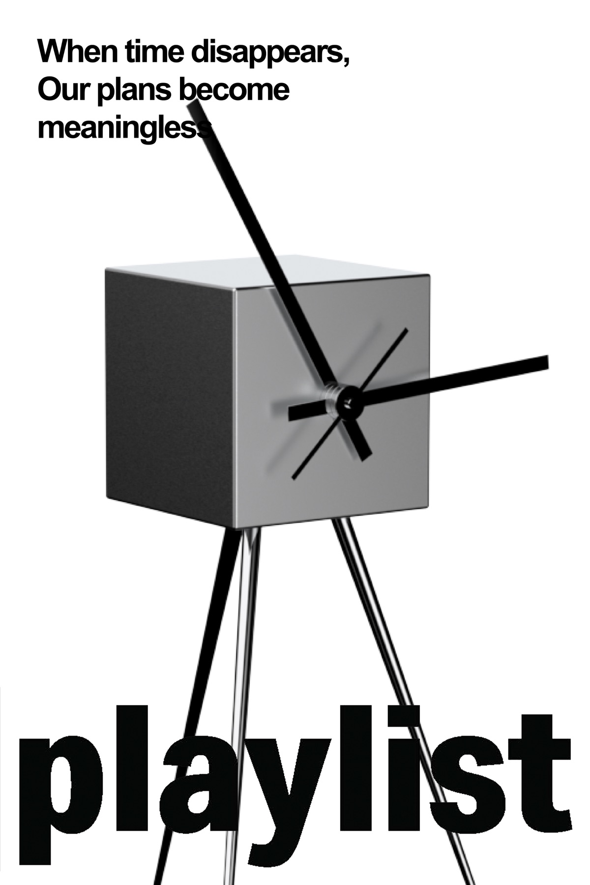
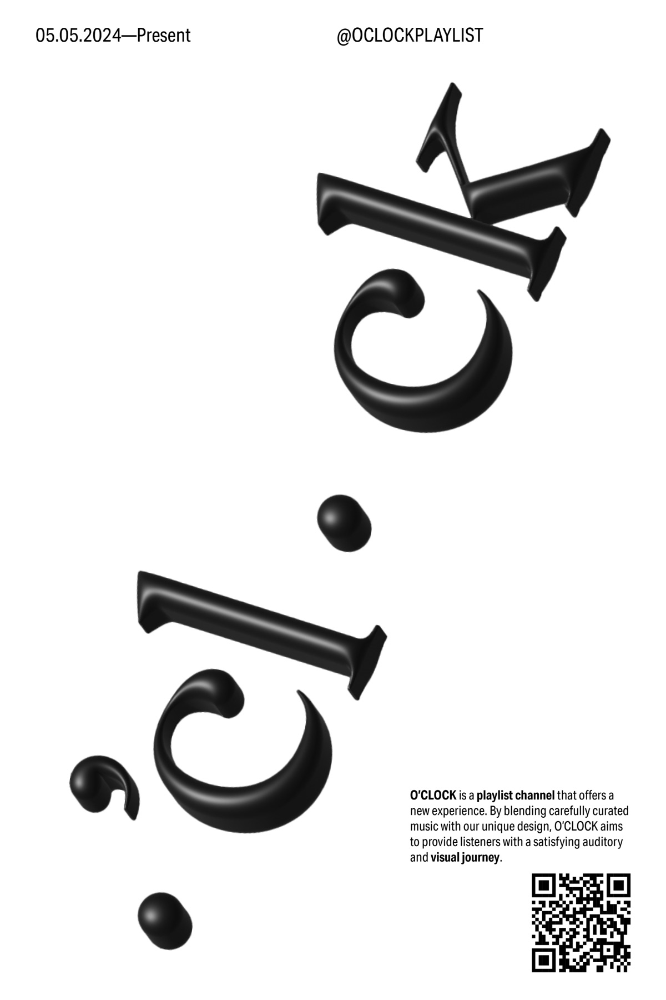
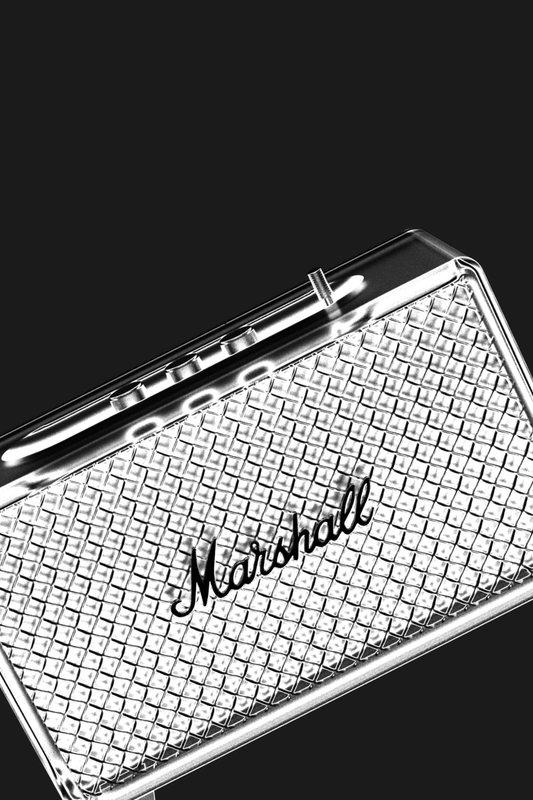